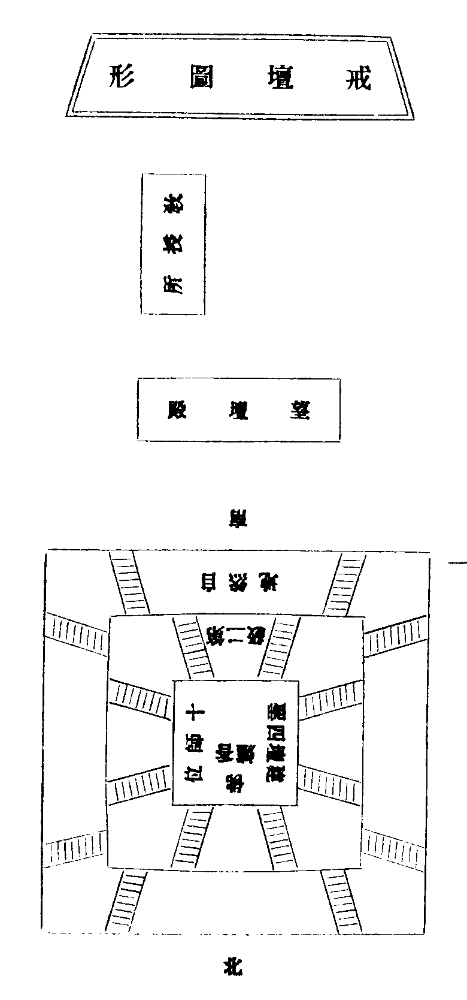

律苑事規卷第二
地 落髮儀
欲出家者律中作單白和僧使大眾知和合者善不爾者循房房語令知作已應與剃髮先請和尚次請阿闍梨應具儀至和尚所三拜互跪合掌請之侍者先念夫頭云。
夫以儒敦事父唯重於成身釋制依師務存於學道故使四儀軌範藉此以琢磨五分法身因茲而成立理須竭誠事奉故當克志陳詞恐汝未能我今教汝(請詞云)。
大德一心念我(某甲)今請大德為落髮和尚願大德為我落髮和尚我依大德故得剃髮出家慈愍故(三請)。
和尚答云汝既陳請我當為汝作剃髮和尚(次引至闍梨所禮拜互跪侍者云)。
夫厭處凡流忻參寶位將欲剪除於俗態理宜警策於蒙心矧在當仁必由名匠今為汝請(某人)為落髮阿闍梨而況此師誨人無倦接物有方故須專秉一心恭陳三請(詞云)。
大德一心念我(某甲)今請大德為落髮阿闍梨願大德為我作落髮阿闍梨我依大德故得剃髮出家慈愍故(三請)。
闍梨答云汝既陳請我當為汝作落髮阿闍梨。
南山聖祖云應以諸部會明立出家儀式在於露地香水洒之周帀七尺四角懸幡中安一座擬出家者復設二勝座擬二師座欲出家者著本俗服拜辭父母尊者訖說偈云。
乃脫俗服(出清信士度人經)善見云以香湯洗浴除白衣氣仍著出家衣(今褊衫也)來至和尚前互跪應為說髮毛爪齒皮何此故有人曾觀此五今為落髮即發先業便得悟道如羅睺羅落髮未竟便得羅漢如熟癕待刺蓮華待日為說法已而向阿闍梨前坐(出善見論)以湯灌頂讚云。
敬禮十方佛已行者說偈云。
阿闍梨乃為剃髮旁人為誦出家唄云。
與剃髮時當頂留三五周羅髮(周羅者小髮也五三者趣舉耳)來至和尚前互跪和尚問云。
今為汝去頂髮可否(答云)爾(或有作文白之方與其落髮 具如別帒)。
準知落髮本是和尚恐其煩久故令闍梨為除餘者但留少許和尚親落今時先自剃作小髮非本教意除已和尚授與袈裟便頂戴受受已還與和尚如是三反和尚為著之(出善見論)說偈曰。
禮佛訖行遶三匝說自慶偈。
禮大眾及二師已在下座受六親拜賀出家離欲心懷遠大父母等皆為禮作悅其道意也中前剃髮(出度人經)毗尼母云剃髮著袈裟已然後授三歸五戒。
玄 受具戒策發儀
初淨人打皷於法堂集沙彌兩人侍者到策發師安下處問訊一執手爐一鳴引磬策蒙師至法堂燒香陞座畢沙彌行道燒香迊眾沙彌同禮三拜侍者教沙彌坐鳴槌一下梵音師作梵訖大眾同聲誦傳香偈(如結界儀中)偈了椎一下侍者念請師夫頭云夫刻彫完眾相皆憑良匠之功教育成全材須假明師之力若不虔請安能允從今為汝等一心恭請某人為策發阿闍梨而況此師誨人無倦接物有方故須專秉一心恭陳三請。
鳴尺一下高聲唱戒子隨念云。
大德一心念我(某甲)今大德為策發阿闍梨願大德為我作策發阿闍梨我依大德故得受具足戒慈愍故(三請各尺一下侍者下座策發師答云)汝既陳請我當為汝作策發阿闍梨所有教示汝須諦听。
策發師說法(如要語中)說法竟(尺一下起立云)。
上來恭依律範行策發法事所萃洪因端為祝延
皇帝聖躬萬歲(云云)(如結界儀中)下座作處世界梵訖而散。
黃 受五戒儀
○第一作梵
初淨人打皷於法堂集沙彌已兩人侍者到十師堂問訊一執手爐一鳴引磬迎五戒師前至法堂燒香登座沙彌行道燒香匝侍者鳴引眾沙彌同禮三拜侍者教沙彌坐鳴槌一下梵音師作梵訖大眾同聲念傳香偈云(如結界中)偈了槌一下侍者鳴尺一下念請師夫頭云。
○第二請師
夫元受三歸為翻往昔之邪境即授五戒先登初級之重樓不得明師難傳勝法今為汝等一心恭請(某甲)堂上(某人)和尚為五戒阿闍梨而況此師誨人無倦接物有方故須專秉一心恭陳三唱請(尺一下高唱云)。
大德一心念我(某甲)今請大德為五戒阿闍梨願大德為我作五戒阿闍梨我依大德故得受優婆塞戒慈愍故(三請各尺一下女受云優婆夷五戒師答云)汝既陳請我當為汝作五戒阿闍梨所有教示汝須諦听(侍者下座)。
○第三請聖
(戒師云)凡欲傳授戒法先須迎請常住三寶護法諸天降臨道場證明加被三寶威重不可坐邀須當起立隨我言詞至誠處請(尺一下齊聲和云)。
我(某甲)稽首歸命一心恭請十方法界常住三寶清淨法身毗盧遮那佛圓滿報身盧舍那佛千百億化身釋迦牟尼佛當來下生彌勒尊佛極樂世界無量壽佛十方三世一切諸佛大小兩乘毗尼戒藏一切法寶文殊師利菩薩普賢菩薩觀世音菩薩大勢至菩薩十方三世諸大菩薩南山聖師菩薩大智律師菩薩西天此土傳法祖師聲聞緣覺得道真僧惟願三寶聞今奉請同降道場證明受戒(尺一下念)。
南無十方常住佛(法僧同各三聲各尺一下)
我(某甲)一心虔請護持正教列席諸天三界萬靈十方聖眾今年歲分賞罰神祇大元土境諸舊善神府城香火州縣聦明現前眾等本命星天此一住處護伽藍神惟願聞今奉請光降道場證明受戒(尺一下)。
南無護法諸天菩薩(三聲各尺一下畢坐)
○第四啟白
上來恭請三寶必賜降臨願展祥光俯垂鑒念現前一眾今欲進受五戒為出家入道之基本切慮人根淺薄魔障忽生故先歸命佛天願求加被庶使現前一眾正當傳授之時一心不亂萬境條然能所相冥授受無昧仰冀威靈決彰感應(念)。
南無十方常住佛(法僧各三聲)
南無護法諸天菩薩(三聲各尺一下畢坐)
○第五策導
戒師說緣境發心(如要語中)。
○第六遮難
上來為汝說緣境發心已更須身器清淨若有遮難障戒不發我今問汝汝當實答先問重難。
更問輕遮(不問年歲衣鉢止十三遮耳)。
問云 汝今名誰 五戒和尚名誰 父母听許 不負人債 非下使人 名祿官人 汝是丈夫 丈夫五病。
○第七懺罪
我(某甲)至心懺悔往昔所造諸惡業(云云如別帋三說各尺一下)。
○第八秉法
罪根既淨戒體可發欲發此體必假三歸是故歸依理體三寶幸勿異緣(尺一下戒子一拜隨聲念云)我(某甲)歸依佛(法僧以下並如羯磨經中三授各尺一下)。
又三結(尺一下云)我(某甲)歸依佛竟(法僧三結各尺一下)。
○第九說相
善男子既已納戒今當示汝戒相受已依相奉持善男子盡形壽不殺生(云云)不盜 不邪婬 不妄語 不飲酒。
○第十發願
行相既明大願主汝當至誠同聲發願我(某甲)至心發願(云云)(如要語中)(尺一下)。
回向云(如結界剏結中)至波羅蜜(下坐)梵音師作處世界梵訖而散。
宇 受十戒儀
○第一作梵
初淨人打皷集沙彌已兩人侍者到十師堂問訊一執手爐一鳴引磬十戒和尚闍梨二師前至法堂齊燒香闍梨登高座和尚於座下坐已沙彌行道燒香迊侍者鳴引眾沙彌同禮三拜侍者教沙彌坐鳴槌一下梵音師作梵訖大眾同聲誦傳香偈(如結界中) (偈了又推一下)。
○第二諸師
夫煉金鑄物而像生元因範正為人行已而有禮皆為師嚴若不令起慇重心安能感發增上戒必須用匝以決愚情今為汝等一心恭請(某寺某人)為十戒和尚(某寺某人)為十戒阿闍梨然此二師解行兼濟宗說俱通故須同秉一心各陳三請(尺一下高聲唱戒子隨念云)。
大德一心念我(某甲)今請大德為十戒和尚願大德為我作十戒和尚我依大德故得受沙彌戒慈愍故(三請各尺一下)。
大德一心念我(某甲)今請大德為十戒阿闍梨願大德為我作十戒阿闍梨我依大德故得受沙彌戒慈愍故(三請各尺一下)。
闍梨答云汝既陳請我當為汝作十戒阿闍梨所有教示汝須諦听(侍者下座)。
○第三請聖
(闍梨云)凡欲傳授戒法先須迎請常住三寶護法諸天臨降道場證明加被三寶威重不可坐邀須當起立隨我言詞至誠虔請(尺一下沙彌齊聲和云)。
我(某甲)稽首歸命一心虔請十方法界常住三寶(請詞如五戒中)。
○第四啟白
上來恭請三寶必賜降臨願展祥光俯垂鑒念現前一眾今欲進受沙彌十戒為出家入道之基本切慮人根淺薄魔障忽生故先歸命佛天願求加被庶使現前一眾正當傳授之時一心不亂萬境條然能所相冥授受無味仰冀威靈決彰威應(念)。
南無十方常住佛(法僧)護法諸天菩薩(各三聲尺一下坐)
○第五策導
云云(如要語中)。
○第六問難
然此戒法必須身器清淨方堪進受切恐汝等身帶遮難以為戒障我今逐一問汝汝須如實而答(第一問)。
(問)善男子汝不犯邊罪否(答)無(此十三難及下十三遮如羯磨經中)。
重難既無更問輕遮還須實答(不問年歲衣鉢三遮但問十三遮耳)。
善男子汝今名誰(答某甲)十戒和尚名誰(答某甲)闍棃為和尚 父母听 負人債 奴婢 宦人 丈夫五病。
上來問汝前無重難後無輕遮戒可得受。
○第七秉法
(戒師說緣境發心如要語中 了云)。
當隨我言歸依三寶(尺一下一拜隨聲念云)。
我(某甲)歸依佛(云云)(如羯磨經中)三說(各尺一下)。
○第八說相
(釋相之文如要語中)。
此是沙彌十戒盡形壽不得犯何故止列十戒者為喜犯故然此十戒無作之體是為無漏解脫功德汝當護持無得毀犯。
○第九五德十數
(如要語中)。
五德者
此之五德出家大要也。
十數者
已上十數一一對破外道要令汝等專心思擇辨別邪正故也(此之十數各有名義廣在律文茲不繁引 尺一下起立)。
○第十回向
上來恭依律範行十戒法事所萃洪因端為祝延 聖壽萬安(迴向等文如結界中)。
宙 受具戒上壇儀(加衣說淨附)
先於頭夜受十戒已十師并備員俱集十師當淨人鳴皷集沙彌次侍者二人到堂問訊一執手爐一鳴引磬并挑灯迎諸師至法堂座下一行列坐諸沙彌行道燒香畢同禮三拜互跪次侍者分擘沙彌引標與十師了鳴引二下念夫頭云。
夫明鏡當臺遇形則鑑洪鐘在架有扣則鳴圓成三寶須假於三師撿舉七非全憑於七證而況諸師解行兼濟宗說俱通故須專秉一心各陳三請(先請得戒師次羯磨師又次教授師後尊證師)令諸沙彌各偏袒右肩右膝著地教如是請云。
大德一心念我(某甲)今請大德為得戒和尚願大德為我作得戒和尚我依大德故得受具足戒慈愍故(三請)。
大德一心念我(某甲)今請大德為羯磨(教後尊證)阿闍梨願大德為我作羯磨(教授尊證)阿闍棃我依大德故得受具足戒慈愍故。
各三請已十師應語發彼喜心齊聲答云。
可爾教授汝清淨莫放逸(沙彌答云)頂載持侍者復引十師歸十師堂至沉日空心就食堂中隨宜課佛了眾僧粥罷應先請一僧作加衣師次集沙彌持衣鉢就某處加衣侍者教沙彌禮三拜坐听師說法。
加五條(正有三品割截揲葉襵葉也下有縵衣從有二十一品隨用改之)
大德一心念我(某甲)此安陀會五條衣受一長一短割截持(三說)。
加七條(正有二品割截揲葉也下至縵衣從有二十二品隨改)
大德一心念我(某甲)此鬱多羅僧七條衣受兩長一短割截衣持(三說)。
加大衣(正有十八品割截揲葉各九也下至縵衣從有大品隨改)
大德一心念我(某甲)此僧伽棃(若干)條衣受(若干)長一短割截衣持(三說)。
加鉢(梵語鉢多羅此云應器)
大德一心念我(某甲)此鉢多羅應量受常用故(三說)。
加坐具(梵語尼師壇此翻隨坐衣)
大德一心念我(某甲)此尼師壇應量作今受持(三說 戒壇且作南向)已上加衣法若無對首並許心念作之(衣鉢加畢)淨人鳴皷侍者二人至堂仍前鳴引執爐挑灯迎引十師自堂而出舉南無本師釋迦牟尼佛行至壇所從東繞壇至西階上第二級投東朝壇一行立禮三拜壇長啟白祝
聖畢收具復念本師號又東繞第二級壇至西階上壇上禮三拜次禮建壇四聖三拜並燒香念本師號從西向北入佛後出南依位立定侍者鳴引二下齊問訊俱坐壇下鳴槌一下有聲音者作梵訖眾誦傳香偈散花偈(如結界儀中)壇長鳴尺一下白壇(今時多是不祝聖不禮拜不梵音不白壇徑直舉差)。
壇長白壇(云云)(如要語中)訖次壇長拈沙彌引標著其名字端正念後差竭磨師教授師壇長云。
第一引沙彌(某甲某甲某甲)將陞寶壇從僧求受具戒今請(某寺)和尚為羯磨師(即第二位)某寺和尚為教授師(即第三位)(某寺)和尚答所成法(即第四位)差了次羯磨作白差教授師應先問云(有將此問在問和後問之)誰能與彼沙彌作教授師(教授師答云 某甲)能(告云)長老既能听作法差。
(問)大德僧听僧集不(答)僧已集(問)和合不(答)和合(問)僧今和合何所作為(答)受戒羯磨(此是通答已後不須再和僧差別答云)差別教授師出眾問難單白羯磨(後法須和僧)。
已上一節每日初上壇並依此式壇長不白檀直舉差也(羯磨師云)差教授師出眾問難單白羯磨。
大德僧听(云云)(如羯磨經中)問成不了(羯磨師云)作法既成教授師出眾問難 某教授師即從座起整衣持具從北入佛後向西出至佛前復朝東向僧問訊轉身從南面西階而下階下侍者鳴引引至教授所敷具而坐侍者鳴引教沙彌禮三拜了互跪侍者次第度衣鉢袱與師師與沙彌三人各擎之先安慰言。
善男子我受壇上眾僧作法差我下來問汝等遮難汝莫恐懼須臾持汝著高勝處汝等三人將陞寶壇求受戒法然恐汝等身帶遮難障戒不發問難之前先當示汝衣鉢名義各有名體色量四種也。
教授師說示衣相遮難等(備如要語中今略提云)。
善男子汝袱中所有三衣一鉢名體色量乃恒沙諸佛之標幟賢聖沙門之軌儀比丘受戒之正緣為僧終身之道具祖師道若不已有定不得戒此衣此鉢是汝三人已有不(答云)已有衣鉢雖是已有要須身器清淨方堪進受若有遮難定不得戒我今問汝汝須實答(遮難釋相如羯磨經疏中)。
問邊罪 污尼 賊住 外道 黃門 殺父母 殺阿羅漢 破僧 出佛血 非人 龍畜 二形更問輕遮 汝各 和尚名 年滿 衣鉢 父母負人債 下使人 官人 丈夫 五病
汝三人既前無重難後無輕遮可納戒法(大略如此餘如要語中)少刻壇上亦當如是答之汝等今於壇下立我往僧中作法和尚問眾僧眾僧默可我舉手召汝汝可即來。
其教授師令戒子起立為正著七條著履揲具衣鉢袱置手中語今於壇下立我當召汝教授師即從座起入壇南面東堦上第二級面西行回身從西堦上至壇上朝東向僧舒手相及處敷具正立合掌白云。
召沙彌入眾單白羯磨。
大德僧听(云云)(如上)教授師只一拜収具問訊仍前西入復位坐之 其第二引和尚(即上第一引羯磨師也)拈標差僧云。
彼第二引(沙彌某甲某甲某甲)將陞寶壇從僧乞戒受具戒今請某寺闍棃為羯磨師(只第一引教授師也)某寺闍棃為教授師(只第一引答法師也)某寺闍梨答所成法(只第一引第五師也下皆例此周而〔始〕)。
第二引羯磨師差教授師單白詞語前後問答並同前 其第二引教授師如前出眾從壇上東階而下侍者引去教授師 其第一引教授師亦從座起於佛後出壇西階上立舉手喚前已教授沙彌云(某甲某甲某甲)來戒子上壇佛前一行立為接衣鉢袱次第安佛前小几案上為戒子燒香并四聖處香了令問訊禮三拜却引戒子從右邊北入遶佛後轉至和尚前為所衣鉢袱安羯磨師前小机案上令敷具禮三拜已皆互跪合掌告云。
大德僧听我(某甲)從和尚(某甲)求受具足戒我(某甲)今從僧乞受具足戒(某甲)為和尚願僧慈愍故拔濟我(三乞了)令戒子復座教授師歸位坐定次羯磨師對眾問難即白云。
對眾問難單白羯磨。
大德僧听(如羯磨經中)問成否了(羯磨師說衣鉢名義遮難等文如要語中若受戒人多不宜廣說)羯磨師作單白已再問衣鉢有無及十三重難十六輕遮並同前教授師出眾問之一般然後說緣境發心(備如要語中)說了。
秉受具足戒白四羯磨(如羯磨經中)三番無差得戒圓滿 作法既了令戒子三人朝外座待第二引教授師上壇作白召羯磨了又待教授師入眾生訖听第三引羯磨師差教授師了方令戒子起三拜侍者在壇下鳴引引下壇往望壇處燒香問訊仍引至祖師堂燒香三拜了引入護壇侍者付小六念與之。
次說隨相及授四依法。
先說四波羅夷法 次說四依法(其文備如羯磨經中)。
次請師作衣藥鉢展轉淨主。
是夜淨人打皷集新僧於壇上侍者至說淨師所問訊鳴引引說淨師至壇上坐訖參頭燒香畢眾禮三拜令坐侍者鳴引一下念請師夫頭云。
夫因畜長財致使袈裟而離體能行說淨免教鐵葉以纏身不得明師安知深旨今為汝等一心恭請(某人)為衣藥鉢展轉淨施主而況此師誨人無倦接物有方故須專秉一心恭陳三請(引一下眾請云)。
大德一心念我(某甲)今請大德為衣藥鉢展轉淨施主願大德為我作衣藥鉢展轉淨施主慈愍故(三請各引一下淨主答曰)汝既陳請我當為汝作衣藥鉢展轉淨施主所有教示汝須諦听。
淨施主說法(如要語中)說淨師說法了侍者一人先去請誦經師鳴引從壇東堦而上說淨師從西堦而下誦經師就座趺坐訖戒子參頭炷香一片同眾三拜皆坐次誦經師誦遺教經訖下壇而去眾戒子繞壇念楞嚴呪參頭回向此乃一壇受事辨若來日又受戒更如前行。

律苑事規卷第二